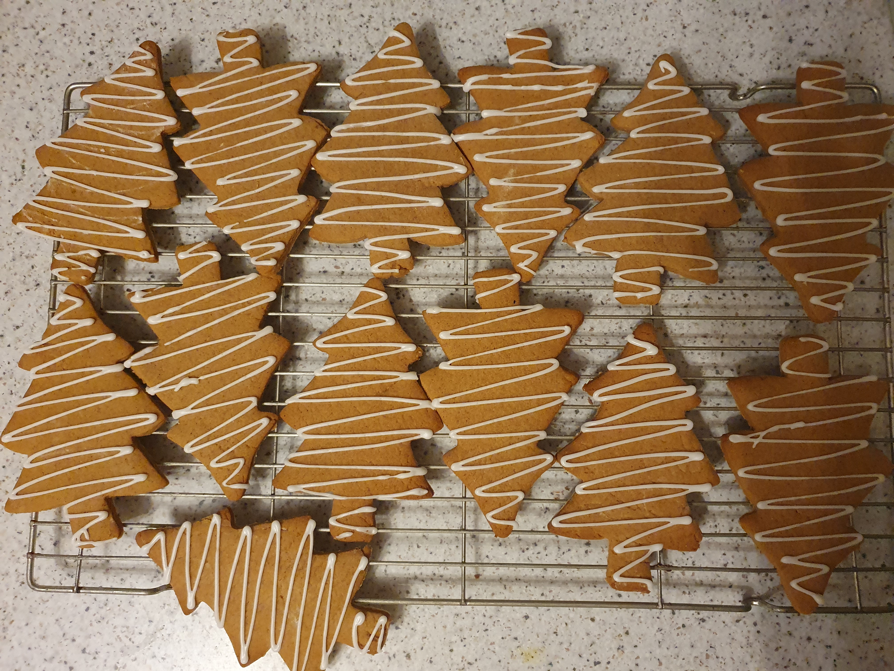

Biscuits
Bourbons
200g butter
100g caster sugar
2tbsp cocoa
280g P flour
Filling:
75g butter
100g icing sugar
2tbsp custard powder
2tbsp cocoa powder
30g melted dark chocolate
160°
15-20mins
30 small sandwiches
Method
- Cream sugar and butter.
- Stir in dry and mix to dough.
- Chill 30mins.
- Roll to 0.5cm thick, cut, prick, bake.
- For filling, cream sugar and butter first.
Notes
- “Like a bourbon, but good!”;
- Freezing changes the texture - do not recommend.
Chocolate crackle tops
7oz plain chocolate
3.5oz butter
4oz caster sugar
3 eggs
vanilla
7.5oz P flour
1oz cocoa
1/2tsp BP
pinch salt
160°
10-15mins
22 cookies
Method
- Melt chocolate and butter.
- Mix, chill for 1 hr, roll in icing sugar, bake.
Chocolate fork biscuits
150g P flour
1tsp BP
70g caster sugar
125g marg
1tsp vanilla
20g cocoa
pinch salt
180°
15mins
Method
- Cream sugar, marg, vanilla.
- Roll, fork, bake.
Double chocolate cookies
125g butter
175g light brown sugar
1 egg
175g SR flour
50g cocoa
100g chocolate chips
170°
12-15mins
25 cookies
Method
- Cream until light and fluffy.
- Beat in eggs.
- Fold rest.
- Roll, chill, bake.
Notes
- Chewy and crisp.
- Nice with hazelnuts too.

Gingerbread
125g (4.5oz) marg
100g (3.5oz) dark brown sugar
4tbsp syrup
325g (11.5oz) P flour
1tsp B of S
2tsp ginger
1tsp cinnamon
170°
9-10mins
17 trees
Method
- Melt marg, sugar, syrup.
- Stir to a stiff dough.
- Roll, cut, chill, bake.
Notes
- Can bake dough from frozen, add couple more minutes.

Hobnobs
75g butter
75g caster sugar
1/2tbsp syrup
75g wholemeal flour
150g oats
1/2 tsp B of S
180°
10mins
15 cookies
Method
- Beat butter and sugar.
- Mix in syrup.
- Add mixed dry to wet a bit at a time -> crumbly mix.
- Press mixture into a 6.5cm cookie cutter and compress
- Bake and top.
Notes
- A bit too sweet, so needs that dark chocolate - could try reducing sugar?
- Used ~60g chocolate to cover.
- 2tbsp mix per biscuit.
- Like crumble mix.
Lebkuchen
7oz runny honey
3oz butter
7oz P flour
3.5oz ground almonds
1tsp BP
1/4tsp B of S
1.5tsp cinnamon
1.5tsp ginger
1tsp mixed spice
(0.5tsp nutmeg/allspice/..)
half zest and juice of orange
200g chocolate
180°
15mins
18 cookies
Method
- Melt honey and butter, then cool 5 mins in fridge.
- Add remaining then chill for at least an hour.
- Roll with damp hands.
- Bake, cool, dip.
Notes
- “Like a jaffa cake”.
- Used 108g chocolate to coat bottoms
Lemon sandwich biscuits
150g butter
1 lemon zest
85g caster sugar
1 egg yolk (optional)
280g P flour
1tbsp cornflour
Filling:
75g butter
130g icing sugar
2tbsp lemon curd.
180°
14-16mins
20 sandwiches
Method
- Cream sugar, butter, zest 2-3 mins until pale and creamy.
- Beat in egg yolk 1 min.; Mix in flour -> clumps.
- Bring to ball, roll to 3-4mm thick, chill at least an hour.
- Cut, bake.
- Beat buttercream 3-5mins until very pale and creamy before adding lemon curd.
Notes
- Can top with simple lemon icing.
Nankhatai
3 green cardamom pods
40g icing sugar
100g butter
70g SR flour
25g semolina
25g gram flour
pinch salt
almonds
140°
20mins
24 cookies
Method
- Grind cardamom seeds with 1tsp icing sugar.
- Beat butter, sugar, cardamom until light and creamy about 10mins.
- Marble-sized balls.
- Flatten slightly with almond.
- Chill 20 mins before baking.
Notes
- Delicate flavour and light biscuit.
Shortbread
8oz butter
8oz (icing sugar + cornflour)
8oz plain flour
demerara sugar
170°
15mins
37 5.5cm cookies
Viennese biscuits
250g butter
50g icing sugar
225g P flour
25g cornflour
Filling:
100g butter
200g icing sugar
170°
10-15mins
30 small whirls
18 small fingers
Method
- Lots beating to pale and fluffy.
- Then sieve flours and beat until well mixed.
- Pipe and bake.
Notes
- To make jam use 160g raspberries and 200g jam sugar.
- 100g dark chocolate to dip.